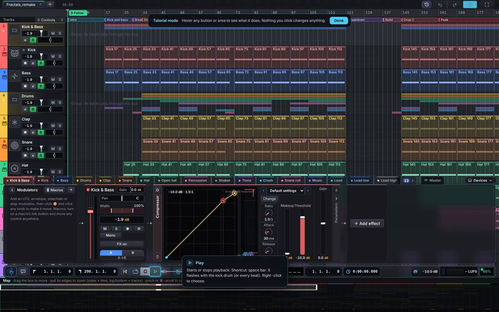

Today the ? button turns on a tutorial mode that freezes the app: you can hover and read, but nothing you click works. This page proposes a guide that points at the real controls while they stay fully usable, reacts to what you do, and runs short psytrance lessons on your own song. Every mock below is AudioLab at its own 16:10 proportions; every knob turns, the steps play, and the pointers are found by control id, not by position.

| ? button | #bTut in the tab bar, between redo and full screen. Toggles tutorial mode (F1). It is the only help entry point; no menu. |
| Tutorial mode | tutSet: a banner “Hover any button or area to see what it does. Nothing you click changes anything.” Every click, key, double-click and right-click is swallowed (checked: the metronome did not toggle). Esc or F1 leaves. |
| Outlines | 200 blue boxes (the cap) drawn over every control with text; the scan uses elementFromPoint on 5 points per control and re-runs every 900 ms: 86 ms per scan here (software drawing), 163 ms to switch on. |
| Texts | TIPS 89 entries, TUTX 9, plus 675 elements with title; virtual areas for the ruler, sections, clips and the loudness map. Pictures (TV) show some gestures. |
| Tooltips | Rich card after 420 ms; hidden while tutorial mode is on. Your pick T3 (callout with an amber leader) is being built by lane F (OV). |
| Commands | SCA: 63 commands with ids, groups, keys; tour is one of them. Settings › Keyboard shortcuts on ⌘/. K1 palette on ⌘K with the Assistant inside is planned (OV8). |
| Assistant | ⌘K chat that edits the song with tools: get_song, add_notes, add_fx_hit, set_track, set_instrument_param, add_effect, set_effect_param, set_tempo, add_section, silence_range, automate. It cannot point at controls yet. |
| Missing | Search, a shortcuts sheet from Help, what's new, lessons, progress, keyboard focus explanations, and any way to learn while working. |
The mode needs a name that sounds like the rest of the app (science instruments, read-outs, a drafting grid), says that it explains, and has a short verb for the “what is this?” part.
A lesson names what to point at, never where. Each step targets a control id from the ids registry (data-al, extensions step DL1) or a command id from the commands registry (COMMANDS, grown from SCA in DL2), and says when it is done with a check on the project state, not on clicks. When the control is not on screen, the guide runs the command that shows it (or offers it as a button), then points.
Try it in the L mock: Shuffle the layout moves the knobs and swaps the devices, Hide devices closes the panel. The running step finds its control again, or offers “Show devices ⇧D”.
A headless test walks every lesson against the app: each target id must resolve to a visible control after its reveal command, and each check must flip when its action is simulated. A renamed or removed control fails the test, not the user.
| Annoyance | Rule here |
|---|---|
| It blocks the app (today's mode) | Nothing is ever blocked. No scrim, no swallowed clicks. The callout never covers its control or the focused control. |
| Too long, can't skip | Lessons are 4 to 6 steps, 2 to 4 minutes. Skip step, Back, End and Esc on every step. Steps you already did are passed with “already done”. |
| Pushed at you | Nothing starts by itself. First run gets one line in the notification stack (N1) offering the guide; the rest is pulled from Help. |
| Forgotten at once | You do the thing on your own song while it plays; the guide only confirms. A lesson can be reopened any time from Help. |
| Costs speed | Off: no elements, no listeners beyond the ? button and F1, no timers. On: one card, one SVG leader, one ring; re-placed only when the target moves or a value changes. |
| Step | Lane | What | Needs |
|---|---|---|---|
| LM0 | H (XT) | Ids first: data-al on the transport, track headers, device knobs and the ? button (DL1 part 1 and the knob part of DL7); COMMANDS with runCommand(id) (DL2). No visible change. | none |
| LM1 | F (OV) | The guide engine ovGuide: callout with the amber leader (shares T3's drawing), ring, placement that never covers the control, reveal by command, Esc and focus rules. Replaces tutSet; F1 and the ? button move to it. | LM0, OV1 |
| LM2 | F (OV) | The Help menu (the picked H) with search over commands, controls, lessons and settings; shortcuts sheet; what's new from desktop/update-notes.txt; the Assistant row. | LM1, OV8 (palette) |
| LM3 | F (OV) | “What is this?” (the picked W), fed by TIPS, the settings table (S4) and INS for live values with units. | LM1, S4 |
| LM4 | new lane J (lessons, prefix lm) | The lesson runner and the four psytrance lessons as data (LM_LESSONS): steps by id, state checks, “already done”, progress in UI.lm. A headless test walks every lesson. | LM1 |
| LM5 | J with C (FT) hooks | Lesson checks that need engine state (sidechain, automation write, master peak) read it through FT_HOOKS / INS getters, never by reaching into another lane's code. | LM4 |
| LM6 | J and the Assistant | Assistant tools point_at(id, text) and start_lesson(id), so “what does Decay do?” answers with a pointer on the real knob. | LM1, LM4 |